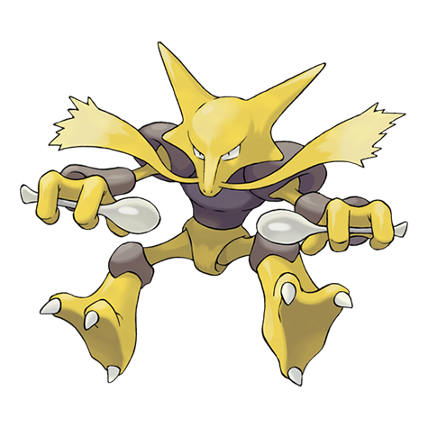
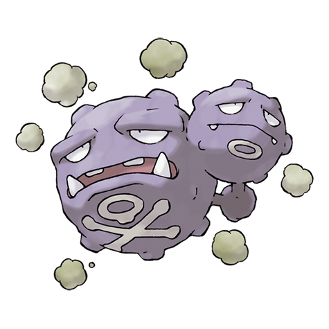
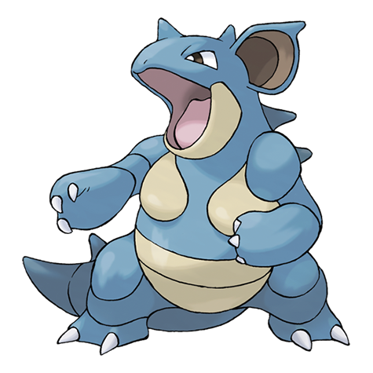

ALAKAZAM
Posee una capacidad intelectual fuera de lo común que le permite recordar todo lo sucedido desde el instante de su nacimiento.
PSIQUICO

WEEZING
Usa sus dos cuerpos para mezclar gases. Según parece, en el pasado podían hallarse ejemplares por todos los rincones de Galar.
VENENO

SNORLAX
Este Pokémon tiene un estómago a prueba de bomba, por lo que es capaz de ingerir incluso comida podrida o mohosa.
NORMAL

NIDOQUEEN
Su defensa destaca sobre la capacidad ofensiva. Usa las escamas del cuerpo como una coraza para proteger a su prole de cualquier ataque.